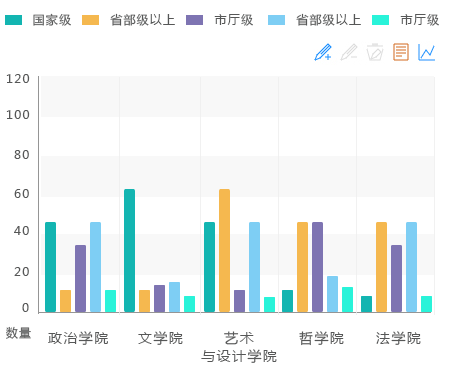
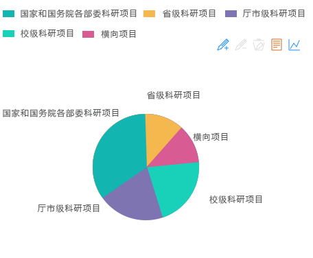
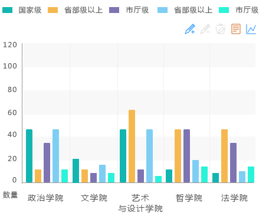

|
科研项目校内分布直方图

科研项目类别组成

各级项目下达部门分布

各类别科研项目级别组成

科研项目列表
| 承担单位 | 主持人 | 成果名称 | 项目类别 | 起止时间 | 经费数额 | |
| 1 | 物理与电子工程学院 | 张继才 | 光导传像束机动车底盘检测装置 | 国家社科基金项目 | 2014/06-2016/12 | 20万 |
| 2 | 物理与电子工程学院 | 张继才 | 光导传像束机动车底盘检测装置 | 国家社科基金项目 | 2014/06-2016/12 | 20万 |
| 3 | 物理与电子工程学院 | 张继才 | 光导传像束机动车底盘检测装置 | 国家社科基金项目 | 2014/06-2016/12 | 20万 |
| 4 | 物理与电子工程学院 | 张继才 | 光导传像束机动车底盘检测装置 | 国家社科基金项目 | 2014/06-2016/12 | 20万 |
| 5 | 物理与电子工程学院 | 张继才 | 光导传像束机动车底盘检测装置 | 国家社科基金项目 | 2014/06-2016/12 | 20万 |
| 6 | 物理与电子工程学院 | 张继才 | 光导传像束机动车底盘检测装置 | 国家社科基金项目 | 2014/06-2016/12 | 20万 |
| 7 | 物理与电子工程学院 | 张继才 | 光导传像束机动车底盘检测装置 | 国家社科基金项目 | 2014/06-2016/12 | 20万 |
| 8 | 物理与电子工程学院 | 张继才 | 光导传像束机动车底盘检测装置 | 国家社科基金项目 | 2014/06-2016/12 | 20万 |